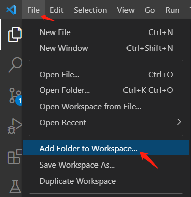

CodeQLforVSCode搭建流程
[toc]
# Visual Studio Code 安装
都是免费的哈哈哈
官网下载
# CodeQL 安装
# 使用 Chocolatey 安装 CodeQL cli
使用 choco 安装可透过指令执行且环境变数也会自动设定好
管理员权限打开 cmd
运行 choco install codeql
安装成功
如果想要自定义安装目录的话，需要更改一下环境变量
ChocolateyInstall 就是默认的安装路径
# gihub 下载
先下载 codeql-cli
选择对应操作系统下载即可

https://github.com/github/codeql-cli-binaries
下载好解压至自己选定的文件夹，再添加系统变量
这里我将 codeql 文件夹名称改为 codeql-cli
在命令行输入 codeql，如下图即配置成功
若提示找不到该命令，重启后再执行命令
下载 codeql 规则库（使用 starter workspace 可跳过此步骤）
https://github.com/github/codeql
在 codeql 文件夹下打开 cmd
执行 git clone https://github.com/github/codeql codeql-repo
下载完后如图
# 下载之后安装 codeql 插件
有三种方法
# 配置 codeql-cli
终端无法访问扩展管理的 cli
可以自己下载 codeql, 并在插件中配置路径
这样终端可以访问
这个插件是使用 codeql-cli 编译并运行规则的，要确保下载的版本支持该插件即可
Executable Path 输入 codeql.exe 所在路径
# 配置规则
两种方法建立 codeql workspace
第一种就是把要审计的代码放入 codeql 中
第二种是把 codeql 加入要审计的代码的 workspace 中
# 使用‘starter workspace’，也就是 git 仓库
-
下载 starter
git clone --recursive https://github.com/github/vscode-codeql-starter/
或者
git clone https://github.com/github/vscode-codeql-starter/
项目下载完成后，进入项目目录
git submodule update --init
git submodule update --remote
确保包含需要的子模块
截图使用的是第一种方法
子模块需要定期更新

-
在 VS Code 中打开 starter workspace

注意：
starter 子模块中包括 C/C++, C#, Java, JavaScript, Python, Ruby 以及 GO 的规则，在 vscode-codeql-starter\ql 下
CodeQL 暂时无法扫描 php 代码
# 将 CodeQL 规则库加入现有的工作站
此种方法未实现，仅按文档进行流程说明
将下载好的本地 CodeQL 库加入你的 workspace
CodeQL 库下载链接
-
选择 File > Add Folder to Workspace，加入下载好的 codeql 库
 -
每种语言都要创建一个新的文件夹
通过 New Folder 或者 Add Folder to Workspace 选项
放置你的自定义规则和规则库 -
在每个语言目录下新建一个 qlpack.yml 文件
用来告诉 CodeQL，这个目录下的语言类型和依赖包
例如：
在 C 代码目录下自定义一个 CodeQL 文件夹名为’my-custom-cpp-pack’
在 C 代码目录下创建一个 qlpack.yml 文件，内容如下
1 | name: my-custom-cpp-pack |
注意：
GO 语言的规则库并不在 github/codeql 中
扫描 GO 代码，需要下载 https://github.com/github/codeql-go
然后将规则像上面说的这样加入规则库
（starter 中都是包含的）
# 运行 CodeQL
# 选择数据库
扫描分析一个 project，我们需要建立一个 CodeQL 数据库
在侧边栏打开 CodeQL 数据库
如图有四种添加数据库的方法
当添加数据库之后，会有数据库视图
可以右击列表中的项进行数据库交互
可以利用 Ctrl/Cmd+click 选择多个数据库
# 创建本地数据库
如果没有存在的数据库导入，也可以先创建一个本地数据库
有三种方法
# 通过 coedql-cli 创建一个数据库
执行命令：
`codeql database create <database> --language=<language-identifier>`
参数说明：
<database> ：创建数据库的路径，目录会在执行命令的时候被创建
--language : 指定数据库语言，输入标识符。当和–db-cluster 一起使用时，可以指定多个，用’,' 分隔，也可以进行多次指定。
--db-cluster ：为多种语言创建数据库
--command ：创建一个或多个编译语言数据库的时候使用。python 和 JavaScript/TypeScript 不需要该参数，如果编译语言不带该参数，codeql 会自动检测并编译
--no-run-unnecessary-builds ：为多语言创建数据库，且包括编译和非编译语言时，可以利用 --no-run-unnecessary-builds 来帮助非编译语言跳过 command 选项
更多参数说明
CodeQL 支持以下语言
| 语言 | 标识符 |
|---|---|
| C/C++ | cpp |
| C# | csharp |
| GO | go |
| Java | java |
| JavaScript/TypeScript | javascript |
| Python | python |
| Ruby | ruby |
找了 codeql-repo 中的 python 案列测试创建数据库成功
# 官方给出的 command 案例
Specifying build commands
The following examples are designed to give you an idea of some of the build commands that you can specify for compiled languages.
Important
The
--commandoption accepts a single argument—if you need to use more than one command, specify--commandmultiple times.If you need to pass subcommands and options, the whole argument needs to be quoted to be interpreted correctly.
C/C++ project built using
make:
C# project built using
dotnet build(.NET Core 3.0 or later):
On Linux and macOS (but not Windows), you need to disable shared compilation when building C# projects with .NET Core 2 or earlier, so expand the command to:
Go project built using the
COEQL_EXTRACTOR_GO_BUILD_TRACING=onenvironment variable:
Go project built using a custom build script:
Java project built using Gradle:
Java project built using Maven:
Java project built using Ant:
Project built using Bazel:
2
3
4
5
6
7
8
9
10
11
12
13
14
15
16
17
# Before building, remove cached objects
# and stop all running Bazel server processes.
bazel clean --expunge
# Build using the following Bazel flags, to help CodeQL detect the build:
# `--spawn_strategy=local`: build locally, instead of using a distributed build
# `--nouse_action_cache`: turn off build caching, which might prevent recompilation of source code
# `--noremote_accept_cached`, `--noremote_upload_local_results`: avoid using a remote cache
codeql database create new-database --language=<language> \
--command='bazel build --spawn_strategy=local --nouse_action_cache --noremote_accept_cached --noremote_upload_local_results //path/to/package:target'
# After building, stop all running Bazel server processes.
# This ensures future build commands start in a clean Bazel server process
# without CodeQL attached.
bazel shutdownProject built using a custom build script:
This command runs a custom script that contains all of the commands required to build the project.